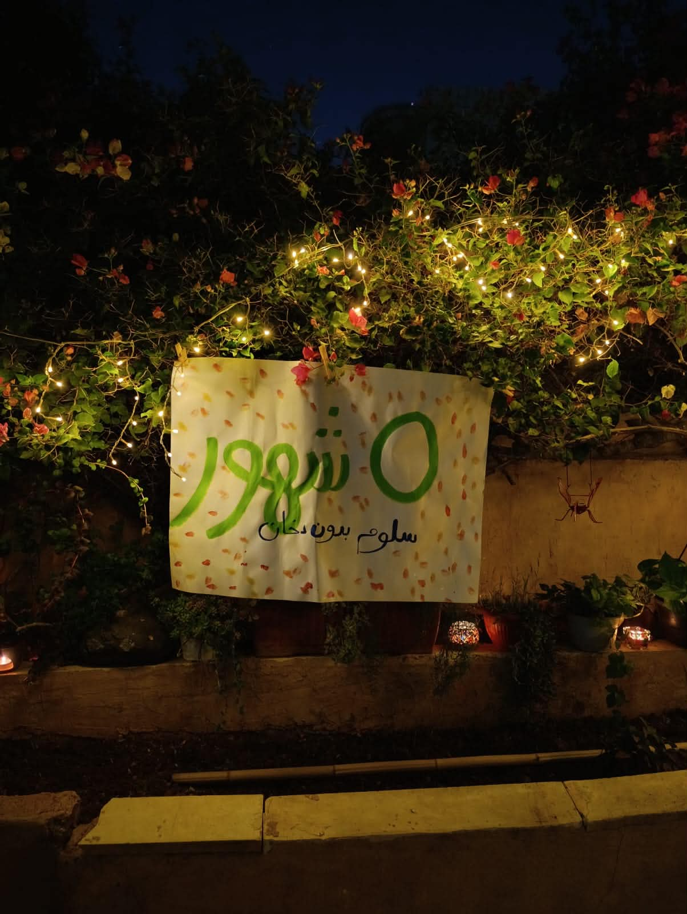

أبرز الأخبار
رمضان بلا غضب: زياد أبو سل ينجح في ضبط النفس
ملف رمضاني استثنائي يتابع الهدوء النسبي، والتصريح الموسمي، وحالة التفاؤل الحذر.
كل ما قيل… وما كان يجب أن يُقال.
ملف رمضاني استثنائي يتابع الهدوء النسبي، والتصريح الموسمي، وحالة التفاؤل الحذر.
اضغط على العنوان، وافتح الملف بنفسك.
في تطوّر وصفه مراقبون داخل العائلة بأنه “غير اعتيادي لكن قابل للتصديق بشروط”، أكدت مصادر موثوقة أن المواطن زياد أبو سل أنهى معظم أيام شهر رمضان هذا العام دون تسجيل حادثة غضب مكتملة الأركان، في سابقة دفعت جهات رقابية عائلية إلى فتح نقاش هادئ حول طبيعة التحوّل.
وبحسب التقرير الأولي الصادر عن وحدة متابعة المزاج العائلي، فإن الشهر مرّ دون لحظات انفجار واضحة، ودون ارتفاع ملحوظ في نبرة الصوت قبل أذان المغرب، وهو ما دفع بعض المراقبين لطرح تساؤلات جدّية، أبرزها:
ورغم أهمية هذا الهدوء النسبي، إلا أن الحدث الأبرز لم يكن ضبط النفس بحد ذاته، بل التصريح الرمضاني السنوي الذي عاد هذا العام بنبرة جديدة.
فخلال إحدى الجلسات العائلية، أعلن زياد بهدوء لافت:
“هالرمضان غير… رح أترك التدخين.”
وقد استقبلت العائلة التصريح وفق البروتوكول المعتاد الذي تطوّر عبر السنوات، ويتكوّن من ثلاث مراحل واضحة:
تشير تقديرات غير رسمية إلى أن إعلان الإقلاع عن التدخين في رمضان يحافظ على قيمة اجتماعية مرتفعة داخل العائلة، لعدة أسباب استراتيجية، من بينها:
ورغم أن التجربة لا تزال في مراحلها المبكرة، إلا أن مصادر مقرّبة أكدت أن مجرد مرور رمضان دون حادثة غضب كبيرة يُعدّ مؤشراً إيجابياً يستحق التوثيق، حتى وإن بقيت العائلة – كما وصفت الوضع – في حالة:
“تفاؤل حذر… مع مراقبة مستمرة.”
تُعد القيادة في الأردن إحدى أبرز المواهب الوطنية التي يتقنها المواطن منذ سنواته الأولى، حيث أثبتت التجارب أن بعض السائقين قادرون على استملاك شارع كامل بمجرد المرور فيه، دون الحاجة لأي إجراءات رسمية.
وقد أشار مراقبون في الشأن المروري إلى أن هذه المهارة الجماعية بلغت من الإتقان مستوى جعل بعض أساطير السباقات العالمية يعيدون تقييم مسيرتهم المهنية، في إشارة غير مؤكدة إلى أن السائق الألماني الشهير مايكل شوماخر فضّل الاعتزال بعد أن أدرك حدود المنافسة الحقيقية عقب زيارة قصيرة للأردن.
إلا أن الميزة الأبرز للقيادة في الشوارع الأردنية ليست السرعة أو المهارة، بل عادة “التطعيم”، وهي ممارسة اجتماعية راسخة يلتزم بها السائقون بمختلف أعمارهم وخلفياتهم، بغضّ النظر عمّن يتلقى الطعم: رجلاً كان أم امرأة، شاباً أم مسناً.
ويؤكد مختصون في السلوك المروري أن هذه العادة تنبع من إيمان عميق بالعدالة المطلقة، إذ يرى المواطن الأردني أن ارتكاب أي خطأ في القيادة — مهما كان بسيطاً أو مبرَّراً — لا يعفي صاحبه من تلقي “الطعم” المناسب، كنوع من إعادة التوازن الأخلاقي للطريق.
غير أن هذه الظاهرة تكتسب بُعداً خاصاً خلال شهر رمضان، حيث تتطور أساليب التطعيم وتزداد إبداعاً مع اقتراب موعد الإفطار. فالسائق الصائم غالباً ما يشعر بأنه الشخص الوحيد الصائم في الشارع بأكمله، بينما يبدو جميع من حوله وكأنهم يتحركون ببطء مدروس يهدف إلى اختبار صبره.
وفي ظل الازدحام الرمضاني المعتاد، يصبح السائق الصائم مضطراً أحياناً إلى توزيع تطعيماته يميناً ويساراً “على قفا من يشيل”، في محاولة إنسانية للوصول إلى وجهته قبل أن يتحول الأذان إلى مسألة شخصية.
وفي هذا السياق، يرى بعض المواطنين — ومن بينهم شيوخ ومختصون في شؤون الحياة اليومية — أن التطعيم لا يفسد الصيام، باعتباره مجرد انعكاس لما في داخل الإنسان، وطريقة صادقة للتعبير عن مشاعره المرورية.
ويضيف هؤلاء أن طبيعة المواطن الأردني تميل إلى التطعيم بطبيعتها، وأن محاولة كبت هذه الطاقة بشكل كامل قد تؤدي إلى اختلالات اجتماعية غير محسوبة، لذلك يُنصح بالاكتفاء بتخفيف الجرعة… لا إلغائها تماماً.

وسام الامتناع: إسلام خليل تُكرَّم لالتزامها التاريخي بعدم التدخين
في احتفال رسمي لم تتوفر له ميزانية لكنه توفر له احترام، أعلنت هيئة التحرير منح إسلام خليل لقب:
“سفيرة الهواء النظيف – درجة أولى”
وذلك بعد نجاحها في الامتناع عن التدخين لمدة: [____ يوم/شهر] (بانتظار التصديق من صاحبة العلاقة)
وأكدت مصادر مطّلعة أن الإنجاز ليس فقط الامتناع، بل القدرة على سماع الآخرين يقولون “أنا كمان رح أترك” دون أن تضحك بصوت عالٍ.
“في ناس بتترك… وفي ناس بتترك وتخلّي اللي حواليها يحسوا بالذنب… وهذا فن.”
التهنئة لا تعني بالضرورة نجاح الجميع في المحاولة القادمة
هذا الباب محفوظ حالياً لحين صدور العدد الأول.